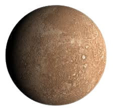
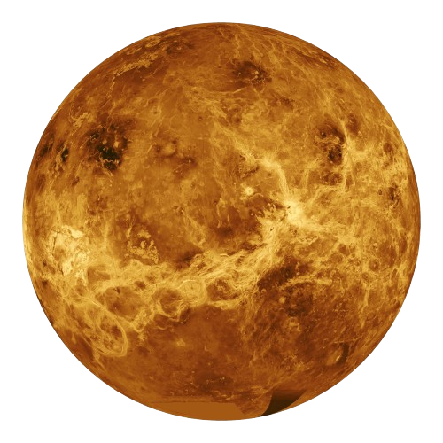
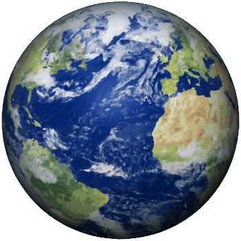
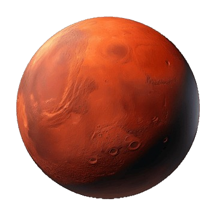
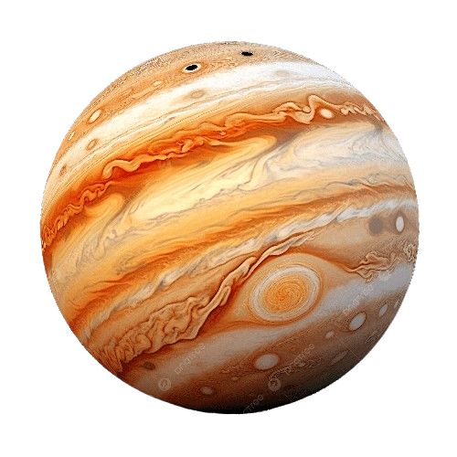
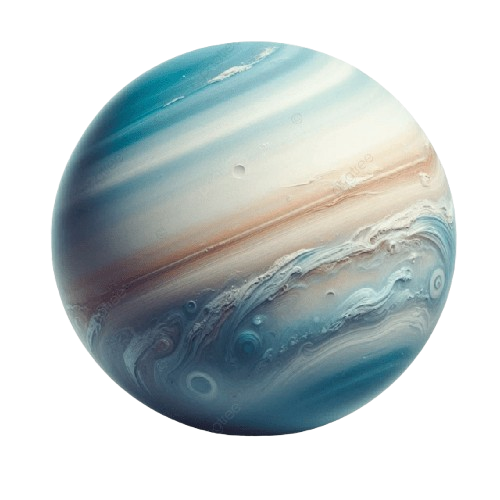
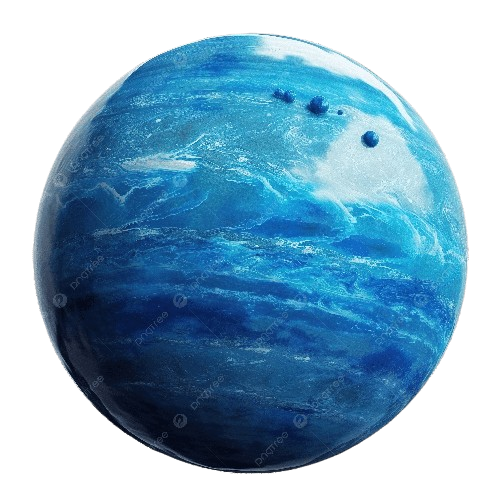

Mercurio
El más cercano al Sol y el más pequeño. Días extremadamente largos

Venus
El planeta más caliente, cubierto por densas nubes tóxicas

Tierra
El único hogar conocido de la vida. 71% cubierto por agua

Marte
El planeta rojo. Candidato para futuras colonizaciones

Júpiter
El gigante gaseoso, con la Gran Mancha Roja en constante tormenta

Saturno
Famoso por sus majestuosos anillos compuestos de hielo y roca

Urano
Gira prácticamente acostado. Un gigante de hielo

Neptuno
El más lejano del Sol y con los vientos más rápidos conocidos